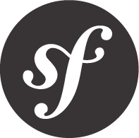

SYMFONYDAY
ROMA, 18 OTTOBRE 2013
Seguici!
La conferenza
Symfony 2 è uno dei framework PHP più apprezzati sul mercato.
Symfony 2 è diventato il riferimento per quanto riguarda lo sviluppo ad alto livello con PHP e molti software open source, come Drupal, eZ Publish e phpBB hanno già iniziato ad includerlo al loro interno. Il SymfonyDay è l'evento di riferimento su Symfony che introduce le best practice e ne mostra case study ad alto livello.
Il programma
| Time | Track 1 |
|---|---|
| 09:00 – 09:30 | Check-in |
| 09:30 – 09:45 |
Presentazione GrUSPFrancesco Fullone |
| 09:45 – 10:00 |
Presentazione pugRoma e SymfonyDay 2013Massimiliano Arione |
| 10:05 – 10:50 |
Combattere contro il codice del “cugino”? Symfony può aiutarti a sopravvivere..Danilo Sanchi |
| 10:50 – 11:05 |
Pausa |
| 11:05 – 11:35 |
Nanos gigantium humeris insidentes (Design pattern dentro Symfony 2)Giulio De Donato e Giorgio Cefaro |
| 11:40 – 12:25 |
Symfony2: il framework più lento del mondoFilippo De Santis |
| 12:30 – 13:00 |
Processing asyncrono dei dati - Symfony2 ❤ Message Queuing.Simone Di Maulo |
| 13:00 – 14:15 | Pranzo |
| 14:15 – 14:45 |
I miei momenti wtf con Symfony2Michele Orselli |
| 14:50 – 15:20 |
Tutto quello che avreste voluto sapere sui Form* (*ma non avete mai osato chiedere)Andrea Giuliano |
| 15:20 – 15:35 |
Pausa |
| 15:35 – 16:05 |
REST in pratica con Symfony2Daniel Londero |
| 16:10 – 16:40 |
Da ORM a ODM (e viceversa)Ettore Delprino |
| 16:45 | Chiusura |
Location
- Event location
-
c/o Luiss-Enlabs
Via Giovanni Giolitti 34
00185 Rome, Italy
Una volta giunti alla Stazione Termini per raggiungere la sala
- Entrare da Via Giolitti 34
- Prendere l'ascensore secondo piano (l'ascensore di destra: bottone 'salire')
- Scendendo dall'ascensore uscire verso il corridoio ESTERNO (se la reception di Grandi Stazioni vi chiede, comunicare che siete di LUISS ENLABS)
- Girare a destra e andare fino in fondo del corridoio L'importante è NON passare dal corridoio interno poichè ci sono gli uffici Grandi Stazioni!
In auto
da Napoli (sud):
Dall'A1 immettersi nel Grande Raccordo Anulare, uscita "Appia" n. 23. Arrivati a San Giovanni seguire le indicazioni per la Stazione Termini.
Da Firenze (nord):
Dall'A1 immettersi nel Grande Raccordo Anulare, uscita "Salaria" n. 8. Seguire le indicazioni per il centro città -> Via Veneto -> Stazione Termini.
Da L'Aquila (est):
Dall'A24/A25 immettersi sulla Tangenziale Est, seguire le indicazioni per San Giovanni -> Stazione Termini.
In treno
Con ogni probabilità il vostro treno effettuerà una fermata direttamente nella Stazione Termini. In caso di fermata in altra stazione vedere le indicazioni nella sezione "mezzi pubblici".
In aereo
Da Fiumicino: il treno Leonardo Express fino alla Stazione Termini.
Da Ciampino: servizio Bus Navetta fino alla Stazione Termini.
Mezzi pubblici
Linee metropolitana: A (linea rossa), B (linea blu)
Linee tranviarie: 5, 14
Linee bus: C2 – C3 – H – M – 16 – 38 – 40 – 64 – 75 – 82 – 85 – 90 – 92 – 105 – 170 – 175 – 217 – 310 – 360 – 649 – 714 - 910
Per maggiori informazioni consultare il sito dell'atac.
Pernottamento
È possibile usufruire di tariffe speciali presso gli hotel convenzionati Hotel Ateneo Garden Palace oppure l'Hotel Laurentia, ubicati entrambi nel cuore del quartiere San Lorenzo a poche centinaia di metri dalla Stazione Termini. Basta prenotare utilizzando i link che abbiamo fornito per ottenere i prezzi scontati.
Sponsorizza
Un grande evento è fatto anche di grandi sponsor, perché quindi non sfruttare l'occasione e contribuire alla conferenza?
Contattaci per sapere come sponsorizzarci!
Gold
€ 1000- Banner sul sito
- Pubblicità nelle comunicazioni pre-evento
- Autorizzazione a portare pubblicità e gadget (ie. volantini, adesivi, magliette)
- Presenza logo sul programma stampato
- Posizionamento del vostro flyer nella sala
Silver
€ 500- Banner sul sito
- Pubblicità nelle comunicazioni pre-evento
- Autorizzazione a portare pubblicità e gadget (ie. volantini, adesivi, magliette)
- Presenza logo sul programma stampato
Bronze
€ 300- Banner sul sito
- Autorizzazione a portare pubblicità e gadget (ie. volantini, adesivi, magliette)